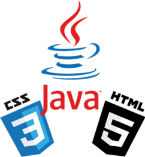

Bonjour, je suis Yann Dipita, Développeur java et bientôt diplômé chez OpenClassrooms !
|  |
Mes compétences
Après avoir terminé mon diplôme de Développeur Web Junior chez Openclassrooms, j'aimerai continuer à me former en architecture de logiciel. Mon projet est de travailler avec les opticiens afin de les aider a concevoir les solutions informatiques dont ils ont de plus en plus besoin. Ma connaissance de leur métier me permettra de mieux comprendre leurs besoins mais aussi leurs contraintes, et je saurai leur proposer des outils plus adaptés. |
Afin de me tenir au courant des nombreuses évolutions dans le domaine, j'ai choisi certaines sources régulièrement mises à jour. Ce contenu sera lui même amélioré au fur et à mesure de mon avancée, de mes connaissances et de mes besoins.
| Mes Sources | Intêret |
|---|---|
| Developpez.com | Newletter Mensuelle |
| La Ferme du Web | Articles, tutoriels, sondages |
| Humancoders | Newletter Mensuelle |
| Jesuisundev | Tutoriels |
| Springboottutorial | Tutoriels |
| Medium | Alertes, articles, tutoriels |
| Google Alertes | Alertes thématiques |
Toutes ces sources sont recensées sur mon compte Feedly, qui notifie instantanément chaque nouvel article.
Dans le cadre de ma reconversion professionnelle au travers d'Openclassroom, j'ai mis en place un planning prévisionnel de mon avancement sur l'année.
| Projet | Titre | Durée | Date estimée |
|---|---|---|---|
| Projet 1 | Démarrez votre formation de Développeur d'application Java | 40 Heures | 19/11/2020 |
| Projet 2 | Débuggez une application Java | 55 Heures | 10/12/2020 |
| Projet 3 | Identifiez les besoins de votre client pour concevoir l'application de ses rêves | 65 Heures | 10/01/2021 |
| Projet 4 | Testez l'implémentation d'une nouvelle fonctionnalité Java | 60 Heures | 10/02/2021 |
| Projet 5 | Créez votre première application web avec Spring Boot | 120 Heures | 10/04/2021 |
| Projet 6 | Concevez une application web Java de A à Z | 130 Heures | 10/06/2021 |
| Projet 7 | Transformez votre backend en API pour rendre votre application plus flexible | 100 Heures | 24/07/2021 |
| Projet 8 | Améliorez votre application avec des systèmes distribués | 100 Heures | 04/09/2021 |
| Projet 9 | Développez une solution en microservices pour votre client | 130 Heures | 29/10/2021 |